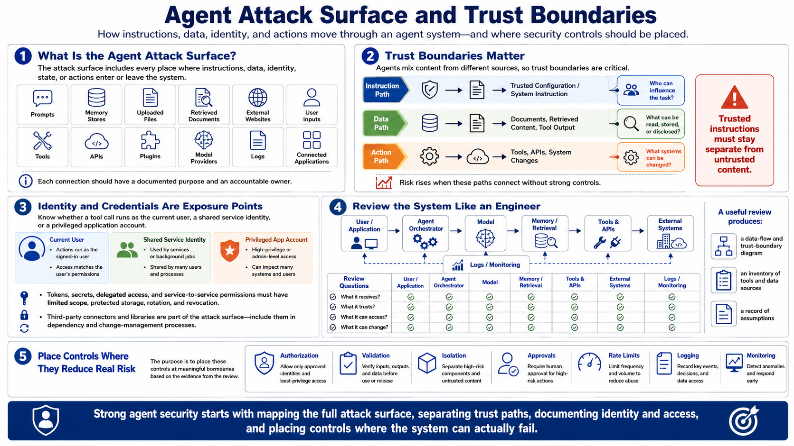

Defending Against Agent Abuse
Understanding the Agent Attack Surface
Connecting to LMS... Progress: in progress
Version 1.0 | Date: 2026-06-21
This course provides educational information regarding defensive security controls for AI agents. It is not offensive security training, exploit development instruction, or legal advice.

Narration
An agent attack surface includes every place where instructions, data, identity, state, or actions enter or leave the system. Prompts, memory stores, uploaded files, retrieved documents, external websites, user inputs, tools, APIs, plugins, model providers, logs, and connected applications can all affect the agent's behavior or expose information. Each connection should have a documented purpose and owner.
Trust boundaries are especially important because agents mix content from different sources. A system instruction may be trusted configuration, while a document or tool response may be untrusted data. The instruction path asks who can influence the task. The data path asks what can be read, stored, or disclosed. The action path asks what systems can be changed. Risk increases when these paths connect without strong controls.
Identity and credentials are also exposure points. Teams should know whether each tool call runs as the current user, a shared service identity, or a privileged application account. Tokens, secrets, delegated access, and service-to-service permissions need limited scope, protected storage, rotation, and revocation. Third-party connectors and libraries should be included in dependency and change-management processes.
A useful attack-surface review produces a data-flow and trust-boundary diagram, an inventory of tools and data sources, and a record of assumptions. For each component, document what it receives, what it trusts, what it can access, and what it can change. That evidence helps teams place authorization, validation, isolation, approvals, rate limits, logging, and monitoring where they reduce meaningful risk.